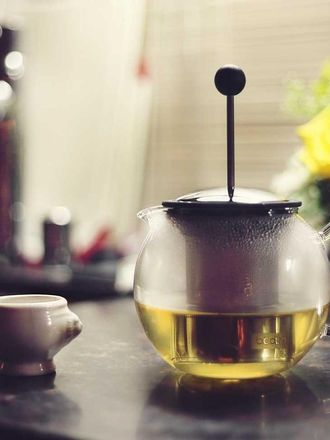
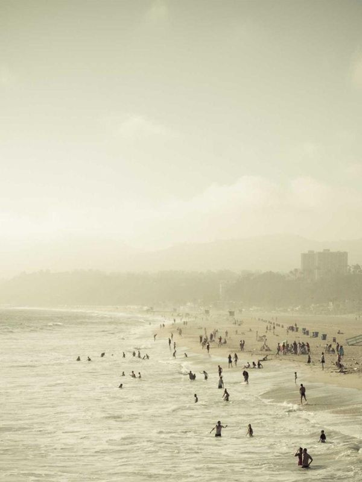
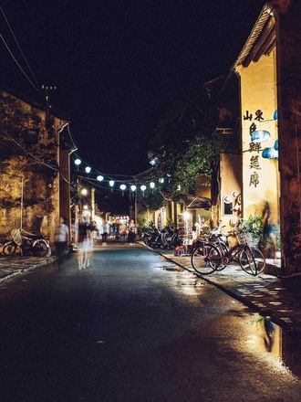
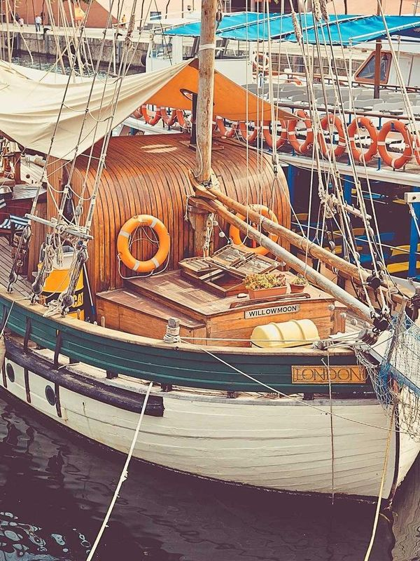
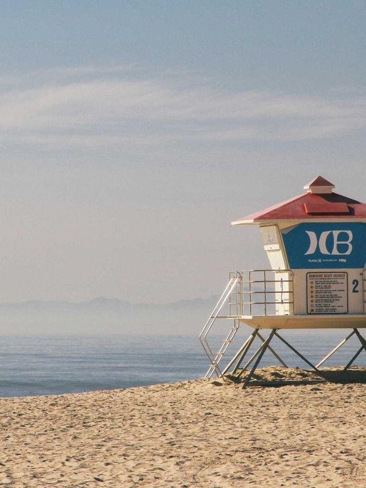
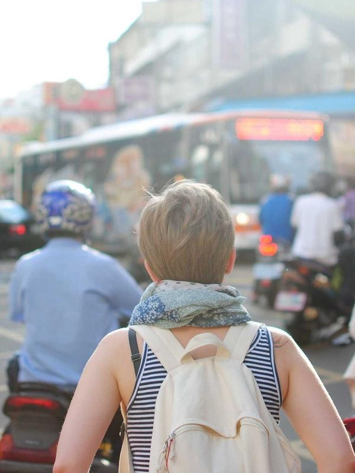

Real things, white room.
Three pieces rebuilt from your picks: gallery white, a dark camera, and objects you could pick up.

HomeOnly the postcard. Tap to turn it over, swipe up for the next. A barely-there bar at the bottom.
References1,350 references from Pinterest in 12 themes (premium UI, liquid glass, camera and photo, motion, loading, calendars, journals, postcards and stamps, desks, profiles, tactile) plus "More ideas" for your board. Tap the corner circle to pick, then Save picks.
The postcardA thin, matte 3D card, the photo in true colour. Drag sideways to turn it over; it tilts a little but never goes upside down. Write on the back in any language; Write → Note changes the handwritten note. Tap a word to select it, drag to select more. Tap a sticker to pick it, then drag to peel or use Peel off; ones over the edge wrap round it. Share makes a Story (9:16) or Post (4:5) image.- The cameraDark, close to the normal camera. Slide on the viewfinder for exposure. Shoot as many as you like: each shot drops into the tray undeveloped. Tap the tray to develop them all together, toss any you don't want, keep the rest.

RollsFilm canisters on a shelf: swipe along, then drag the front one up into the camera (or tap Load). Finish roll rewinds it and the whole roll comes out as a big contact strip; tap a frame to look closer, then file it into a folder.
The desk (profile)Your prints, a postcard, stamps and film lie on a desk. Drag to move, pinch or the round handle to turn and resize. Tidy up snaps everything into rows; Scatter puts it back. Try the four surfaces. + puts more on the desk.
Cut a stampPick a photo, drag the perforated frame over the part you want, choose the shape and whether it's printed, then Cut. The holes punch round the edge and the stamp lifts out. Put it on the desk.
No sound yet, on purpose. Synthesised sound is what felt fake before, and the free sound libraries blocked me from here. The hooks are in; real recordings drop in next.
Photos are stand-ins. Real photographs from Unsplash photographers, credited in the repo, until yours go in.
Fonts are placeholders. You'll choose those later.